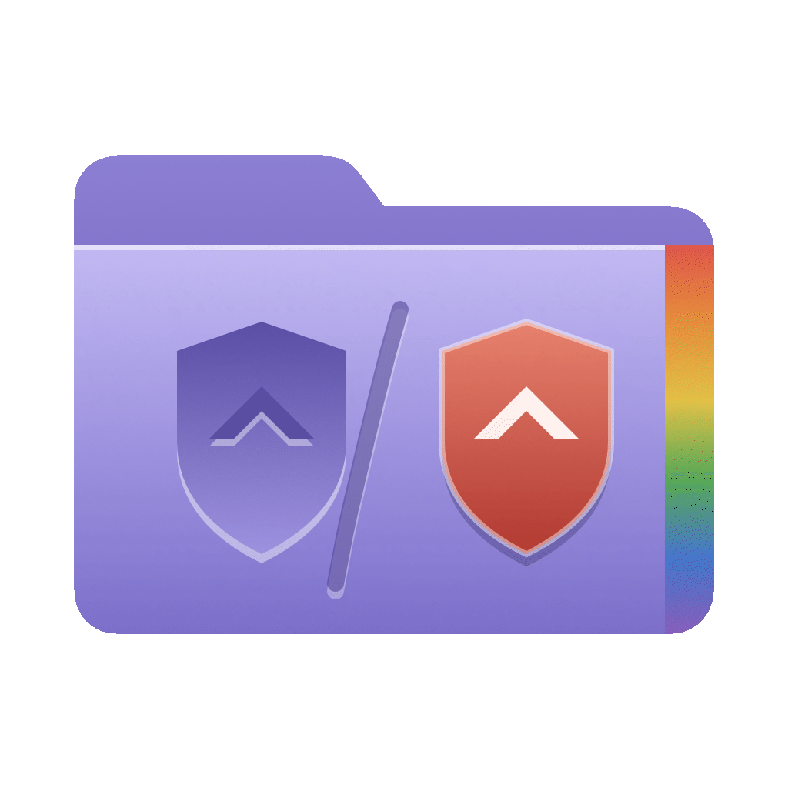
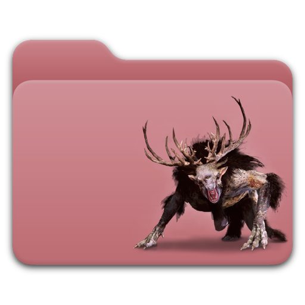
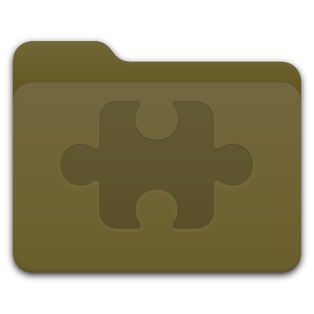
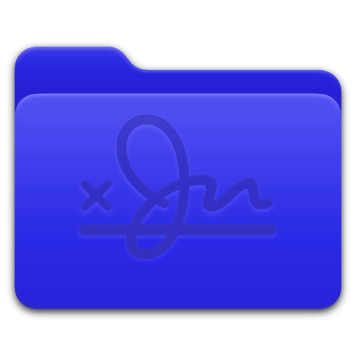

Engrave anythingAlles gravieren
Text, emoji, SF Symbols or images. Engraved into the folder, or placed on top in their own colors. Text, Emoji, SF Symbols oder Bilder. In den Ordner graviert oder in Originalfarben aufgelegt.

Folder Crest


Text, emoji, SF Symbols or images. Engraved into the folder, or placed on top in their own colors. Text, Emoji, SF Symbols oder Bilder. In den Ordner graviert oder in Originalfarben aufgelegt.
Tint the whole folder. Pick a color, try it right here. Tönt den ganzen Ordner. Farbe wählen, gleich hier ausprobieren.
To a new or an existing folder, in every size from 16 to 1024 px. Auf neuen oder vorhandenen Ordner, in allen Größen von 16 bis 1024 px.
Save icons and load them back later. The library keeps the recipe, so every icon can be rendered again. Icons sichern und später wieder laden. Die Sammlung speichert das Rezept, jedes Icon lässt sich neu rendern.
macOS 26 Tahoe or later, on Apple silicon. There is no Intel build. macOS 26 Tahoe oder neuer auf Apple silicon. Einen Intel-Build gibt es nicht.
The app is not notarized yet. Right-click it and choose Open, once. macOS remembers your choice. Die App ist noch nicht notarisiert. Einmal per Rechtsklick auf Öffnen starten. macOS merkt sich die Wahl.
Icons are written as finished images. Changing the system folder color later does not recolor them. Icons werden als fertige Bilder geschrieben. Eine spätere Änderung der Systemordnerfarbe färbt sie nicht um.